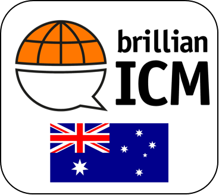
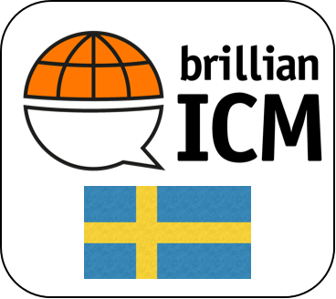
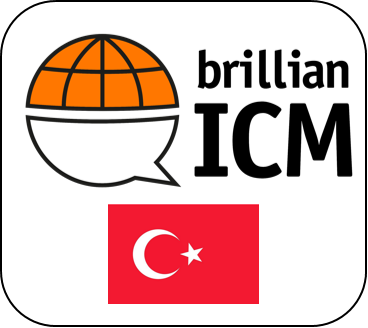

Badge Criteria - What it takes to earn this badge

Criteria for »brillianICM module Australia«
Successful completion of the serious game brillianICM module Australia which includes the following activities:
- Theory module Intercultural Management which contains:
- Classification of Australia in the cultural world map
- Guessing the 9 globe dimension values of Australia
- Explanation and execution of the four-sides model of Friedemann Schulz von Thun
- Classification of the visible and invisible parts of the iceberg model
- Activities (e.g. multiple choice, drag and drop,…) regarding appropriate behavior in the following work and personal circumstances:
- Small talk
- Separation of personal and work life
- Appropriate work clothes
- Punctuality
- Meeting manners
- Communication styles
- Australian cuisine
- Immigration
- Overtime
- National sports
- Difference between men and women in business
- Leisure activities after work
Criteria for »brillianICM module Brazil«
Successful completion of the serious game brillianICM Module Brazil which includes the following activities:
- Theory Module Intercultural Management which contains:
- Classification of Brazil in the cultural world map
- Guessing the 9 globe dimension values of Brazil
- Explanation and execution of the four-sides model of Friedemann Schulz von Thun
- Activities (e.g. multiple choice, drag and drop,…) regarding appropriate behavior in the
following work and personal circumstances:
- Greeting
- Appropriate conversation topics
- Socializing
- Working clothes
- Meeting arrangements
- Project team meetings
- Giving feedback
- General meeting behavior
- Small talk
- Long-term vs. short-term orientation
- Showing emotions in public
- Communication with each other
- Leisure activities
Criteria for »brillianICM module China«
Successful completion of the serious game brillianICM Module China which includes the following activities:
- Theory Module Intercultural Management which contains:
- Classification of China in the cultural world map
- Guessing the 9 globe dimension values of China
- Explanation and execution of the four-sides model of Friedemann Schulz von Thun
- Classification of the visible and invisible parts of the iceberg model
- Activities (e.g. multiple choice, drag and drop,…) regarding appropriate behavior in the
following work and personal circumstances:
- Greeting
- Appropriate working clothes
- Team meetings
- Meeting manners
- Leisure activities after work
- Cultural background
- Social networks
- Roles and responsibilities
- Hierarchies
- Criticism
- Respect
- Dining culture
Criteria for »brillianICM module Spain«
Successful completion of the serious game brillianICM Module Spain which includes the following activities:
- Theory Module Intercultural Management which contains:
- Classification of Spain in the cultural world map
- Guessing the 9 globe dimension values of Spain
- Explanation and execution of the four-sides model of Friedemann Schulz von Thun
- Classification of the visible and invisible parts of the iceberg model
- Activities (e.g. multiple choice, drag and drop,…) regarding appropriate behavior in the
following work and personal circumstances:
- Greeting
- Traditional cuisine
- Lunch invitations
- Punctuality
- Meeting manners
- Leisure activities after work
- Appropriate work clothes
- Hierarchies at work
- Siestas
- Spanish basics
- Lessons learned

Criteria for »brillianICM module Germany«
Successful completion of the serious game brillianICM Module Germany which includes the following activities:
- Theory Module Intercultural Management which contains:
- Fundamental classification of intercultural management
- Classification of Germany in the cultural world map
- Guessing the 9 globe dimension values of Germany
- Explanation and execution of the four-sides model of Friedemann Schulz von Thun
- Classification of the visible and invisible parts of the iceberg model
- Activities (e.g. multiple choice, drag and drop,…) regarding appropriate behavior in the
following work and personal circumstances:
- Greeting
- First contact with new colleagues
- Appropriate conversation topics
- Soccer clubs
- Punctuality
- Reactions to sick notes
- Hiring criteria
- Overtime
- Substitution
- Choosing a way of transportation
- Renting a car
- The Autobahn
- Bonus sharing under colleagues
- Small talk
- Table manners
Criteria for »brillianICM module India«
Successful completion of the serious game brillianICM Module India which includes the following activities:
- Theory Module Intercultural Management which contains:
- Classification of India in the cultural world map
- Guessing the 9 globe dimension values of India
- Explanation and execution of the four-sides model of Friedemann Schulz von Thun
- Classification of the visible and invisible parts of the iceberg model
- Activities (e.g. multiple choice, drag and drop,…) regarding appropriate behavior in the
following work and personal circumstances:
- Greeting
- Big crowds
- Appropriate working clothes
- Talking about personal things with colleagues
- Punctuality
- Different meeting situations
- Different communication styles
- Roles and responsibilities in a team
- Customer meetings
- Food choices and Indian cuisine
- Different documentation manners
- Negotiation
- Caste system
- Personal invitations of colleagues
- Behavior of women in rural regions
- Language and pronounciation mistakes
- Giving feedback

Criteria for »brillianICM module Sweden«
Successful completion of the serious game brillianICM Module Sweden which includes the following activities:
- Theory Module Intercultural Management which contains:
- Classification of Sweden in the cultural world map
- Guessing the 9 globe dimension values of Sweden
- Explanation and execution of the four-sides model of Friedemann Schulz von Thun
- Classification of the visible and invisible parts of the iceberg model
- Activities (e.g. multiple choice, drag and drop,…) regarding appropriate behavior in the
following work and personal circumstances:
- Greeting
- Politeness and honesty
- Invitations from colleagues
- Showing gratitude
- Separation of personal and work life
- Working clothes
- Direct and indirect communication
- Business card content
- Small talk in business context
- Business fairs
- Dominance in business talks
- Leisure activities after work
- Hierarchies at work
- Gender equality

Criteria for »brillianICM module Turkey«
Successful completion of the serious game brillianICM Module Turkey which includes the following activities:
- Theory Module Intercultural Management which contains:
- Classification of Turkey in the cultural world map
- Guessing the 9 globe dimension values of Turkey
- Explanation and execution of the four-sides model of Friedemann Schulz von Thun
- Classification of the visible and invisible parts of the iceberg model
- Activities (e.g. multiple choice, drag and drop,…) regarding appropriate behavior in the
following work and personal circumstances:
- Greeting
- Basics of the Turkish language
- Small talk
- Appropriate working clothes
- Official rules and regulations
- Human orientation
- Turkish cuisine
- Meeting manners
- Punctuality
- Women in business
- History
- Leisure activities after work
- Hierarchies
- Visiting a mosque
- Price negotiation

Criteria for »brillianICM module USA«
Successful completion of the serious game brillianICM Module USA which includes the following activities:
- Theory Module Intercultural Management which contains:
- Classification of USA in the cultural world map
- Guessing the 9 globe dimension values of USA
- Explanation and execution of the four-sides model of Friedemann Schulz von Thun
- Classification of the visible and invisible parts of the iceberg model
- Activities (e.g. multiple choice, drag and drop,…) regarding appropriate behavior in the
following work and personal circumstances:
- Small talk
- Self-introductions
- Politeness in different situations
- Team dinners
- Talk about religion
- Tipping in a restaurant
- Meeting manners
- Criticism
- Long-term and short-term orientation
- Optimism